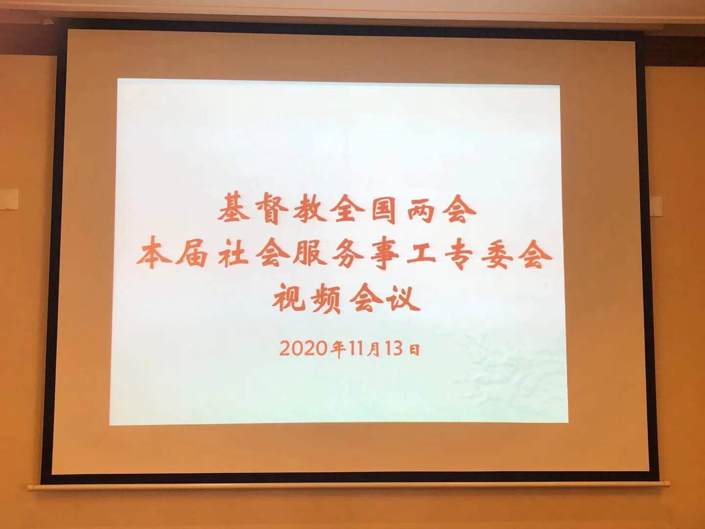

欢迎您访问！
加入收藏
设为首页
联系我们
简体版
繁体版
English
旧版
登录
注册
手机版
APP下载
微信
首页
全国两会
人员组成
部门设置
政策法规
重要文件
规章制度
神学思想建设
新闻动态
本会动态
海外交流
教会活动
时事关注
院校事工
各地教会
教堂风采
神学院校
各地两会
社会服务
社服新闻
项目事工
义工注册
天风在线
天风杂志
信仰教义
灵修语丝
讲章精选
大公信经
新教经典
异端辨析
教义简介
圣经APP
圣经下载
视频音像
新闻视频
讲道视频
活动专题
韶关市基督教三自爱国会举办“基督教中国化”《广东省宗教事务条例》专题讲座
哈尔滨市基督教两会举办学习贯彻《宗教团体管理办法》座谈交流会
陕西省基督教两会赴安康市基督教会开展调研工作
与时俱进 推进新时代特色神学教育
咸宁市基督教荣获抗疫“先进单位”和“先进个人”称号
本会动态
更多
基督教全国两会开展爱国主义教育活动
推进我国基督教中国化务虚座谈会在沪举行
基督教全国两会牧长看望慰问在京学习的第十五期爱国宗教人士研修班和第五届爱国宗教人士硕士研究生班基督教界学员
担负时代使命 书写教会故事
迎挑战 谋融合——本届传媒事工委员会第二次会议在厦门召开
广西壮族自治区民宗委一行访问基督教全国两会
《基督教爱国主义教程》修订暨培训会议在华东神学院召开
海外交流
更多
澳门基督教界代表人士访问团访问广东省基督教两会
海外教会及团体致函关心、支持中国抗击新冠肺炎疫情
骨肉之亲 同忧共患 祈祷守望
加拿大联合教会访问团一行到访陕西省基督教两会
美国葛培理布道团来川访问四川教会
吴巍牧师接待芬兰福音信义会访问团一行
联合圣经公会代表团访问基督教全国两会
徐晓鸿牧师接待美国基督教访问团
加拿大联合教会代表访问中国基督教两会
联合圣经公会总干事一行访问中国基督教两会
美国柳溪教会主席一行访问中国基督教两会
教会活动
更多
韶关市基督教三自爱国会举办“基督教中国化”《广东省宗教事务条例》专题讲座
哈尔滨市基督教两会举办学习贯彻《宗教团体管理办法》座谈交流会
陕西省基督教两会赴安康市基督教会开展调研工作
咸宁市基督教荣获抗疫“先进单位”和“先进个人”称号
湖北省基督教两会举办全省中青年教职人员培训班
领会全会精神 争创教会新貌
菏泽市基督教举行《天风》发行征订会
时事关注
更多
国家宗教事务局关于《中华人民共和国境内外国人宗教活动管理规定实施细则（修订征求意见稿）》公开征求意见的通知
国家宗教事务局关于《宗教教职人员管理办法（征求意见稿）》公开征求意见的通知
《中国日报》评论：一个以基督徒包装的虚伪政客
国务院通知：暂不开展聚集性宗教活动
国家宗教事务局致天主教、基督教界的节日贺信
【战“疫”】基督教界：抗击疫情 共渡难关
【关注】宗教领域疫情防控工作如何抓实抓细？权威要求来了！
抗战疫情 | 我们为什么暂停聚会？
上海市委统战部印发《关于上海统一战线开展“同舟共济、抗击疫情”工作的意见》的通知
【视频】汪洋出席宗教团体负责人迎春座谈会
《宗教团体管理办法》公布，2020年2月1日起施行！
社会服务
更多

基督教全国两会本届社会服务事工专委会召开视频会议
阚保平牧师、沈学彬牧师赴福建省南平市及泉州市考察调研社会服务项目
沈学彬牧师赴安徽省安庆市考察长江洪水灾后援助项目
阚保平牧师赴江西省铅山县考察洪灾灾后重建项目
抗击疫情，有爱就会赢——基督教全国两会助力新疆防疫行动
同心战汛，为南方汛情代祷
抗击疫情，有爱就会赢|基督教全国两会战疫新行动
院校事工
更多
与时俱进 推进新时代特色神学教育
情洒东北神学院——辽宁各地教会向东北神学院献爱心
聚焦新蓝图 奋进新征程
研读国学经典，推进中华优秀传统文化进校园
华东神学院教师学习党的十九届五中全会精神
黑龙江神学院举行爱国主义专题讲座
“关注消防，平安你我”
浙江神学院第37届学生会成立会议顺利举行
感恩相聚，爱里合一
强健体魄 活力校园——贵州圣经学校举行2020年秋季运动会
河南神学院举办消防安全系列活动
阅读排行
1
坚持中国化方向， 弘扬爱国爱教传统， 办好新时代的中国教会
2
担负时代使命 书写教会故事
3
推进人才建设，办好神学教育
4
国家宗教事务局关于《宗教教职人员管理办法（征求意见稿）》公开征求意见的通知
5
服务信徒 关注阅读
6
本届海外联络事工委员会第二次会议在福建召开
7
基督教全国两会牧长看望慰问在京学习的第十五期爱国宗教人士研修班和第五届爱国宗教人士硕士研究生班基督教界学员
8
《基督教爱国主义教程》修订暨培训会议在华东神学院召开
灵修伴侣
每日灵修
每日灵修
圣经下载
在线下载圣经
圣经APP
下载圣经APP
圣经阅读
在线阅读圣经
天风APP

 手机版
手机版

 APP下载
APP下载
 微信
微信
 手机版
APP下载
微信
手机版
APP下载
微信